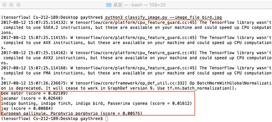
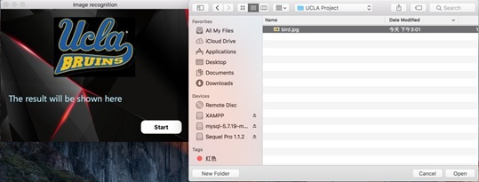
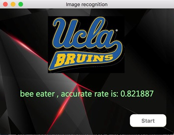
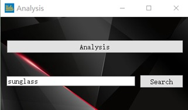

In order to build up a classification function, selection of module is the most important. The module was trained from raw data so that the quality and the quantity of raw data is the key of training a module. Generally speaking, to train a module is based on Big Data. With Tensor-Flow, Image classification is simply a comparison between your input and module. In short, the accuracy of the image classification depends on how powerful the module we use. For this research, we just use the module from 'www.image-net.org' because we think that is the most powerful one. Furthermore, we find a API called "classify_image" in Github so that we can easily use it. In Figure 2, we just simply input a photo of bird.jpg (Figure 1), and after the processing, we can get the top 5 possibilities with accurate rate about what is that photo (as shown in the orange box in Figure2). As a result, with around 0.822 accurate rate the input photo is a "bee eater", and with around 0.026 accurate rate the input photo is a "jacamar". Base on that, we can almost confirm that the input is a "bee eater". The bee-eaters are a group of near-passerine birdsin the family Meropidae containing three genera and 27 species. The reason why our result can be a specialization of bird instead of bird, is the module we used is so much powerful.
Figure 1
Figure 2
2.2 Image Recognition ApplicationSince we already know the function to classify an image, we decide to create a simply application for image recognition (as shown in Figure 3).
Figure 3
In order to visualize the function, we make a concise and friendly user interface, which can be easily used by everyone even a child. In python, PyQt5 is a good choice for design GUI. There is a start button for you to choose an image to input to the application. After clicking it, a file open dialog will show up for choosing an image. Then the chosen image (here we just simply use the Figure 1 as an example) will be processed immediately, analysed by tensorflow and the result will be sent back (as shown in Figure 4), telling us what the thing is in the image and the accuracy rate of recognition.
Figure 4
2.3 Data MiningBy the use of the classify-image function demonstrated above. We have 430-thousand information of the Weibo users. We processed and classified approximately the users' profile photo according to their physiological features, and input these data into database. By the use of PyQt5 and QSS, we simply built a system (as shown in Figure 5) for clustering the data with interactive user interface.
Figure 5
If you click the analysis button, you will get an overview of all these users. In order to make the result more reliable and precise, we only selected the data which the accurate rate is higher than 0.50. Then we made an application to count the number of images in different types, and show it in a histogram figure (will be shown in the next slide - 3. Result), which can make the result easier to be understood.
In this application, we also provide a function called "analysis" that can search the name of a certain type and then show the images of this type in our database.
Figure 6